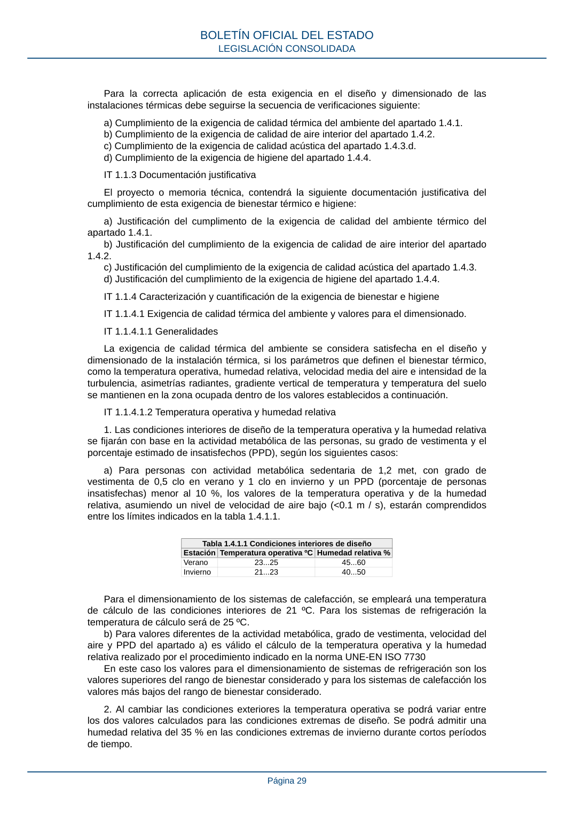
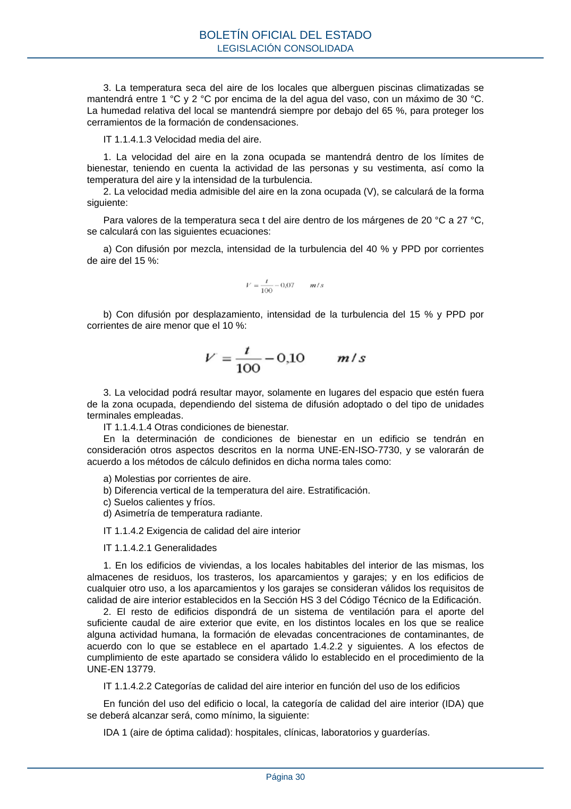
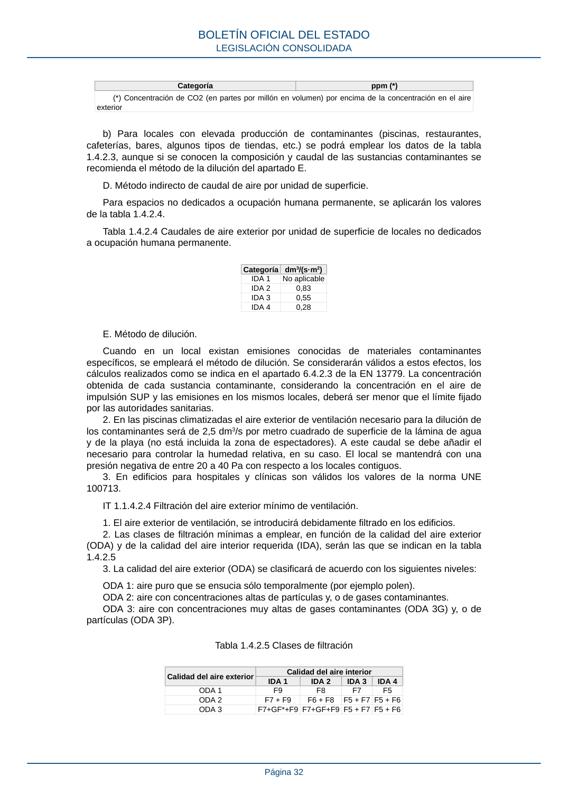

RITE · Disposición adicional segunda. Obligaciones de información. · versión 2022-08-02 · capa asociada
Formatos: JSON compacto · Markdown · PDF fuente
Ámbito del documento · texto del ámbito · documento y tablas
ID técnico a0103 · PDF pág. 28-33 · jerarquía no validada por persona · contrastado con el literal de la página 28 (marcador PDF); no validado por persona · padre: a0101
Disposición adicional segunda. Obligaciones de información. Las empresas instaladoras o mantenedoras a las que hace referencia este real decreto deben cumplir las obligaciones de información a los prestadores y las obligaciones en materia de reclamaciones establecidas, respectivamente, en los artículos 22 y 23 de la Ley 17/2009, de 23 de noviembre, sobre el libre acceso a las actividades de servicios y su ejercicio. PARTE II. INSTRUCCIONES TÉCNICAS INSTRUCCIÓN TÉCNICA IT 1. DISEÑO Y DIMENSIONADO IT 1.1 EXIGENCIA DE BIENESTAR E HIGIENE IT 1.1.1 Ámbito de aplicación El ámbito de aplicación de esta sección es el que se establece con carácter general para el RITE, en su artículo 2, con las limitaciones que se fijan en este apartado. IT 1.1.2 Procedimiento de verificación BOLETÍN OFICIAL DEL ESTADO LEGISLACIÓN CONSOLIDADA Página 28 Para la correcta aplicación de esta exigencia en el diseño y dimensionado de las instalaciones térmicas debe seguirse la secuencia de verificaciones siguiente: a) Cumplimiento de la exigencia de calidad térmica del ambiente del apartado 1.4.1. b) Cumplimiento de la exigencia de calidad de aire interior del apartado 1.4.2. c) Cumplimiento de la exigencia de calidad acústica del apartado 1.4.3.d. d) Cumplimiento de la exigencia de higiene del apartado 1.4.4. IT 1.1.3 Documentación justificativa El proyecto o memoria técnica, contendrá la siguiente documentación justificativa del cumplimiento de esta exigencia de bienestar térmico e higiene: a) Justificación del cumplimento de la exigencia de calidad del ambiente térmico del apartado 1.4.1. b) Justificación del cumplimiento de la exigencia de calidad de aire interior del apartado 1.4.2. c) Justificación del cumplimiento de la exigencia de calidad acústica del apartado 1.4.3. d) Justificación del cumplimiento de la exigencia de higiene del apartado 1.4.4. IT 1.1.4 Caracterización y cuantificación de la exigencia de bienestar e higiene IT 1.1.4.1 Exigencia de calidad térmica del ambiente y valores para el dimensionado. IT 1.1.4.1.1 Generalidades La exigencia de calidad térmica del ambiente se considera satisfecha en el diseño y dimensionado de la instalación térmica, si los parámetros que definen el bienestar térmico, como la temperatura operativa, humedad relativa, velocidad media del aire e intensidad de la turbulencia, asimetrías radiantes, gradiente vertical de temperatura y temperatura del suelo se mantienen en la zona ocupada dentro de los valores establecidos a continuación. IT 1.1.4.1.2 Temperatura operativa y humedad relativa 1. Las condiciones interiores de diseño de la temperatura operativa y la humedad relativa se fijarán con base en la actividad metabólica de las personas, su grado de vestimenta y el porcentaje estimado de insatisfechos (PPD), según los siguientes casos: a) Para personas con actividad metabólica sedentaria de 1,2 met, con grado de vestimenta de 0,5 clo en verano y 1 clo en invierno y un PPD (porcentaje de personas insatisfechas) menor al 10 %, los valores de la temperatura operativa y de la humedad relativa, asumiendo un nivel de velocidad de aire bajo (<0.1 m / s), estarán comprendidos entre los límites indicados en la tabla 1.4.1.1. Tabla 1.4.1.1 Condiciones interiores de diseño EstaciónTemperatura operativa ºCHumedad relativa % Verano 23...25 45...60 Invierno 21...23 40...50 Para el dimensionamiento de los sistemas de calefacción, se empleará una temperatura de cálculo de las condiciones interiores de 21 ºC. Para los sistemas de refrigeración la temperatura de cálculo será de 25 ºC. b) Para valores diferentes de la actividad metabólica, grado de vestimenta, velocidad del aire y PPD del apartado a) es válido el cálculo de la temperatura operativa y la humedad relativa realizado por el procedimiento indicado en la norma UNE-EN ISO 7730 En este caso los valores para el dimensionamiento de sistemas de refrigeración son los valores superiores del rango de bienestar considerado y para los sistemas de calefacción los valores más bajos del rango de bienestar considerado. 2. Al cambiar las condiciones exteriores la temperatura operativa se podrá variar entre los dos valores calculados para las condiciones extremas de diseño. Se podrá admitir una humedad relativa del 35 % en las condiciones extremas de invierno durante cortos períodos de tiempo. BOLETÍN OFICIAL DEL ESTADO LEGISLACIÓN CONSOLIDADA Página 29 3. La temperatura seca del aire de los locales que alberguen piscinas climatizadas se mantendrá entre 1 °C y 2 °C por encima de la del agua del vaso, con un máximo de 30 °C. La humedad relativa del local se mantendrá siempre por debajo del 65 %, para proteger los cerramientos de la formación de condensaciones. IT 1.1.4.1.3 Velocidad media del aire. 1. La velocidad del aire en la zona ocupada se mantendrá dentro de los límites de bienestar, teniendo en cuenta la actividad de las personas y su vestimenta, así como la temperatura del aire y la intensidad de la turbulencia. 2. La velocidad media admisible del aire en la zona ocupada (V), se calculará de la forma siguiente: Para valores de la temperatura seca t del aire dentro de los márgenes de 20 °C a 27 °C, se calculará con las siguientes ecuaciones: a) Con difusión por mezcla, intensidad de la turbulencia del 40 % y PPD por corrientes de aire del 15 %: b) Con difusión por desplazamiento, intensidad de la turbulencia del 15 % y PPD por corrientes de aire menor que el 10 %: 3. La velocidad podrá resultar mayor, solamente en lugares del espacio que estén fuera de la zona ocupada, dependiendo del sistema de difusión adoptado o del tipo de unidades terminales empleadas. IT 1.1.4.1.4 Otras condiciones de bienestar. En la determinación de condiciones de bienestar en un edificio se tendrán en consideración otros aspectos descritos en la norma UNE-EN-ISO-7730, y se valorarán de acuerdo a los métodos de cálculo definidos en dicha norma tales como: a) Molestias por corrientes de aire. b) Diferencia vertical de la temperatura del aire. Estratificación. c) Suelos calientes y fríos. d) Asimetría de temperatura radiante. IT 1.1.4.2 Exigencia de calidad del aire interior IT 1.1.4.2.1 Generalidades 1. En los edificios de viviendas, a los locales habitables del interior de las mismas, los almacenes de residuos, los trasteros, los aparcamientos y garajes; y en los edificios de cualquier otro uso, a los aparcamientos y los garajes se consideran válidos los requisitos de calidad de aire interior establecidos en la Sección HS 3 del Código Técnico de la Edificación. 2. El resto de edificios dispondrá de un sistema de ventilación para el aporte del suficiente caudal de aire exterior que evite, en los distintos locales en los que se realice alguna actividad humana, la formación de elevadas concentraciones de contaminantes, de acuerdo con lo que se establece en el apartado 1.4.2.2 y siguientes. A los efectos de cumplimiento de este apartado se considera válido lo establecido en el procedimiento de la UNE-EN 13779. IT 1.1.4.2.2 Categorías de calidad del aire interior en función del uso de los edificios En función del uso del edificio o local, la categoría de calidad del aire interior (IDA) que se deberá alcanzar será, como mínimo, la siguiente: IDA 1 (aire de óptima calidad): hospitales, clínicas, laboratorios y guarderías. BOLETÍN OFICIAL DEL ESTADO LEGISLACIÓN CONSOLIDADA Página 30 IDA 2 (aire de buena calidad): oficinas, residencias (locales comunes de hoteles y similares, residencias de ancianos y de estudiantes), salas de lectura, museos, salas de tribunales, aulas de enseñanza y asimilables y piscinas. IDA 3 (aire de calidad media): edificios comerciales, cines, teatros, salones de actos, habitaciones de hoteles y similares, restaurantes, cafeterías, bares, salas de fiestas, gimnasios, locales para el deporte (salvo piscinas) y salas de ordenadores. IDA 4 (aire de calidad baja) IT 1.1.4.2.3 Caudal mínimo del aire exterior de ventilación 1. El caudal mínimo de aire exterior de ventilación, necesario para alcanzar las categorías de calidad de aire interior que se indican en el apartado 1.4.2.2, se calculará de acuerdo con alguno de los cinco métodos que se indican a continuación. A. Método indirecto de caudal de aire exterior por persona. a) Se emplearán los valores de la tabla 1.4.2.1 cuando las personas tengan una actividad metabólica de alrededor 1,2 met, cuando sea baja la producción de sustancias contaminantes por fuentes diferentes del ser humano y cuando no esté permitido fumar. Tabla 1.4.2.1 Caudales de aire exterior, en dm3/s por persona. Categoríadm3/s por persona IDA 1 20 IDA 2 12,5 IDA 3 8 IDA 4 5 b) Para locales donde esté permitido fumar, los caudales de aire exterior serán, como mínimo, el doble de los indicados en la tabla 1.4.2.1. c) Cuando el edificio disponga de zonas específicas para fumadores, estas deben consistir en locales delimitados por cerramientos estancos al aire, y en depresión con respecto a los locales contiguos. B. Método directo por calidad del aire percibido. En este método basado en el informe CR 1752 (método olfativo), los valores a emplear son los de la tabla 1.4.2.2. Tabla 1.4.2.2 Calidad del aire percibido, en decipols Categoríadp IDA 1 0,8 IDA 2 1,2 IDA 3 2,0 IDA 4 3,0 C. Método directo por concentración de CO2 a) Para locales con elevada actividad metabólica (salas de fiestas, locales para el deporte y actividades físicas, etc.), en los que no está permitido fumar, se podrá emplear el método de la concentración de CO2, buen indicador de las emisiones de bioefluentes humanos. Los valores se indican en la tabla 1.4.2.3. Tabla 1.4.2.3 Concentración de CO2 en los locales. Categoría ppm (*) IDA 1 350 IDA 2 500 IDA 3 800 IDA 4 1.200 BOLETÍN OFICIAL DEL ESTADO LEGISLACIÓN CONSOLIDADA Página 31 Categoría ppm (*) (*) Concentración de CO2 (en partes por millón en volumen) por encima de la concentración en el aire exterior b) Para locales con elevada producción de contaminantes (piscinas, restaurantes, cafeterías, bares, algunos tipos de tiendas, etc.) se podrá emplear los datos de la tabla 1.4.2.3, aunque si se conocen la composición y caudal de las sustancias contaminantes se recomienda el método de la dilución del apartado E. D. Método indirecto de caudal de aire por unidad de superficie. Para espacios no dedicados a ocupación humana permanente, se aplicarán los valores de la tabla 1.4.2.4. Tabla 1.4.2.4 Caudales de aire exterior por unidad de superficie de locales no dedicados a ocupación humana permanente. Categoría dm3/(s·m2) IDA 1 No aplicable IDA 2 0,83 IDA 3 0,55 IDA 4 0,28 E. Método de dilución. Cuando en un local existan emisiones conocidas de materiales contaminantes específicos, se empleará el método de dilución. Se considerarán válidos a estos efectos, los cálculos realizados como se indica en el apartado 6.4.2.3 de la EN 13779. La concentración obtenida de cada sustancia contaminante, considerando la concentración en el aire de impulsión SUP y las emisiones en los mismos locales, deberá ser menor que el límite fijado por las autoridades sanitarias. 2. En las piscinas climatizadas el aire exterior de ventilación necesario para la dilución de los contaminantes será de 2,5 dm3/s por metro cuadrado de superficie de la lámina de agua y de la playa (no está incluida la zona de espectadores). A este caudal se debe añadir el necesario para controlar la humedad relativa, en su caso. El local se mantendrá con una presión negativa de entre 20 a 40 Pa con respecto a los locales contiguos. 3. En edificios para hospitales y clínicas son válidos los valores de la norma UNE 100713. IT 1.1.4.2.4 Filtración del aire exterior mínimo de ventilación. 1. El aire exterior de ventilación, se introducirá debidamente filtrado en los edificios. 2. Las clases de filtración mínimas a emplear, en función de la calidad del aire exterior (ODA) y de la calidad del aire interior requerida (IDA), serán las que se indican en la tabla 1.4.2.5 3. La calidad del aire exterior (ODA) se clasificará de acuerdo con los siguientes niveles: ODA 1: aire puro que se ensucia sólo temporalmente (por ejemplo polen). ODA 2: aire con concentraciones altas de partículas y, o de gases contaminantes. ODA 3: aire con concentraciones muy altas de gases contaminantes (ODA 3G) y, o de partículas (ODA 3P). Tabla 1.4.2.5 Clases de filtración Calidad del aire exterior Calidad del aire interior IDA 1 IDA 2 IDA 3 IDA 4 ODA 1 F9 F8 F7 F5 ODA 2 F7 + F9 F6 + F8 F5 + F7F5 + F6 ODA 3 F7+GF*+F9F7+GF+F9F5 + F7F5 + F6 BOLETÍN OFICIAL DEL ESTADO LEGISLACIÓN CONSOLIDADA Página 32 * GF = Filtro de gas (filtro de carbono) y, o filtro químico o físico-químico (fotocatalítico) y solo serán necesarios en caso de que la ODA 3 se alcance por exceso de gases. 4. Se emplearán prefiltros para mantener limpios los componentes de las unidades de ventilación y tratamiento de aire, así como para alargar la vida útil de los filtros finales. Los prefiltros se instalarán en la entrada del aire exterior a la unidad de tratamiento, así como en la entrada del aire de retorno. 5. Los filtros finales se instalarán después de la sección de tratamiento y, cuando los locales sean especialmente sensibles a la suciedad (locales en los que haya que evitar la contaminación por mezcla de partículas, como quirófanos o salas limpias, etc.), después del ventilador de impulsión, procurando que la distribución de aire sobre la sección de filtros sea uniforme. 6. En todas las secciones de filtración, salvo las situadas en tomas de aire exterior, se garantizarán las condiciones de funcionamiento en seco (no saturado). 7. Las secciones de filtros de la clase G4 o menor para las categorías del aire interior IDA 1, IDA 2 e IDA 3 solo se admitirán como secciones adicionales a las indicadas en la tabla 1.4.2.5. 8. Los aparatos de recuperación de calor deben estar siempre protegidos con una



PDF fuente redistribuible: copia fiel enlazada en esta página (SHA256 verificado).